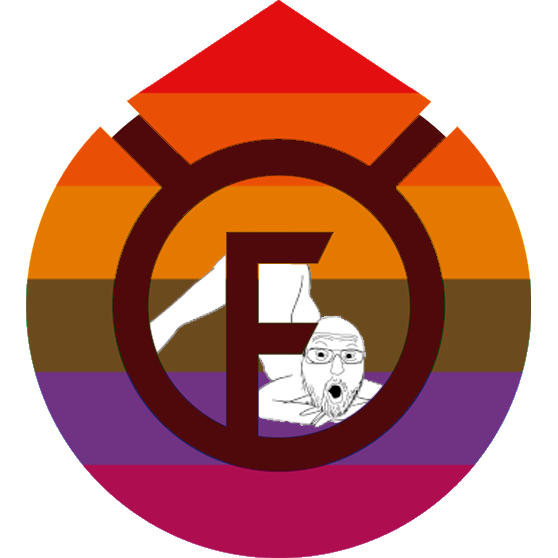

Future 2.13.5 (Free Edition)

clickgui pic
click here to watch cattyn's video
mirrors:
yougame.biz /
github.com /
cattyn.dev
plutosolutions telegram
[ info ]
It's almost Christmas and Santa came a bit early this year! And so, because you, anarchy players, were behaving very badly this year, you are receiving
COAL for Christmas. Don't act surprised, if you still play anarchy 1 year after discovering it, you're already used to eating shit and receiving shitty presents, aren't you?
Since our first Konas crack people have been asking us to crack Future nonstop, and the reason why we weren't touching it is because there was no reason to do so.
RusherHack has a lot more useful utility mods than Future does and Future loses to 3arthh4ck in PvPs. RusherHack got cracked by us a week after we released the first Konas crack, and 3arthh4ck is free.
Not only that, but Future got worse over time. 0x22 started pasting features from 3arthh4ck and just making stuff worse, for example the GUI and HUD look like shit now (
click here for shitty comparison). Then 0x22 got crystalpvp.cc server access and he started making serverside bypasses that only users with Future could do, so if you packetlogged Future's packetfly and just replaced some values in your packetfly code then your packetfly would magically start working again.
[ how-to ]
Official launcher
- Download the crack installer from here
- Run it with
java -jar Installer.jar or by double-clicking it
- Select your game path if it wasn't detected automatically
- Select the minecraft profile to install Future into (profile should have a version with Forge installed)
- Click checkboxes if you need baritone or optifine installed
- Click install
- Run the game
MultiMC
- Download the crack package from here
- Install loader-1.0.jar by following this video (after clicking edit paste stuff from future.json)
- Do the same for tweaker-1.0.jar but after clicking edit paste stuff from tweaker.json
- Make sure the tweaker comes before the loader (like this)
- Put auth_key into your %username%/Future folder (on windows it's C:/Users/%username%/Future/auth_key)
- Run the game
TL Legacy
- Open the launcher and check your game directory (look here)
- Download the official 1.12.2 Forge installer (from here) and run it
- In that installer make sure the game directory is the same as the launcher one, press OK
- Download the crack installer from here
- Run it with
java -jar Installer.jar or by double-clicking it, make sure the game path is set to the launcher path and choose the forge profile
- Click checkboxes if you need baritone or optifine installed
- Click install
- Open the launcher, find game version "1.12.2-forge-14.23.5.2859" and run it
[ issues ]
If something fails then you might need to check your java installation. We recommend using corretto JDK 8 for running this
Get it
here
[ credits ]
Kalju, 0x22 - making the client
Friendly - Making the base of this client
Steve From Minecraft - cracking
maywr - assistance in reversing efforts
mrnv - help with JVMTI and ASM
cattyn - moral support
{kind=link}
{kind=link}
{kind=link}
{kind=link}